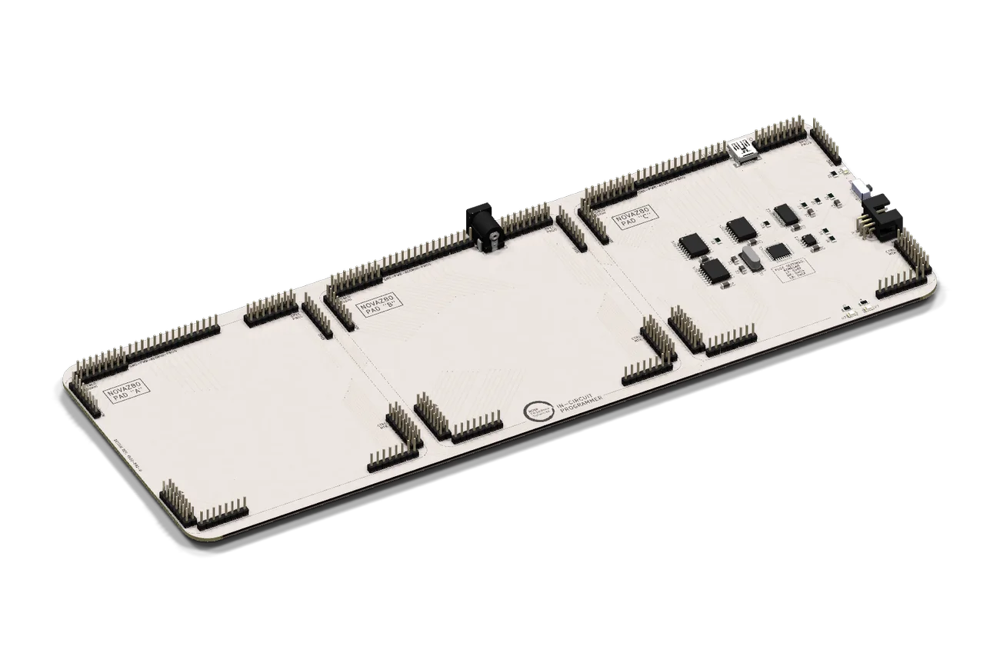
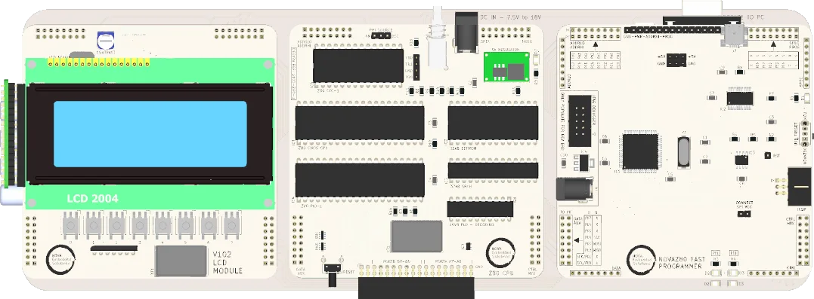

V102-PR2-0
3-pad programmer
The first programmer to work, and a side-by-side bench for debugging every board.
- Controller
- ATmega8
- Bus drive
- Three PCF8574 I²C expanders
- Writes
- One byte at a time
- Pads
- Three, all wired in parallel
- Accepts
- v101 and v102 boards

What's on the board

How it works
- ATmega8 with FT232RL and a 23LC512 (usually) buffer; same protocol and script as PR1
- Three PCF8574 I²C expanders drive A0–A7 (27h), A8–A15 (26h) and D0–D7 (24h); ROM control lines direct
- Three paralleled pads form a backplane; each pad can stack. v101 boards fit via the 90° rows and ICPP header
- Barrel jack feeds PWR to the CPU board's regulator; it backs off if another programmer pulses RESX
What it took
- The first working in-circuit programmer: I²C expanders made up for a 32-pin MCU
- Bridged the v101 and v102 board families on one backplane
- Top access to every board for probing and debugging
- Showed I²C was too slow for page mode, which led to PR1
Next revision
- Byte mode only: full ROMs take minutes
- Wire.setClock() before Wire.begin(): I²C likely at 100 kHz
- Bus isn't released after a write timeout
- Weak PCF8574 highs vs the MTX's data pull-downs; 12 V next to A8 on ICPP
Schematic
Tap to open it full screen, then pinch, scroll or drag to explore. It stays sharp at any zoom.
Photo and files
Live photo: board-pr2.jpgThe built 3-pad programmerStraight down or three-quarter view, chips fitted, plain background.